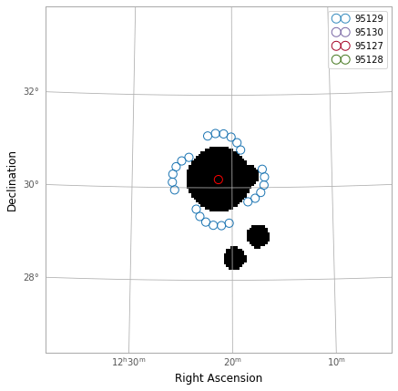
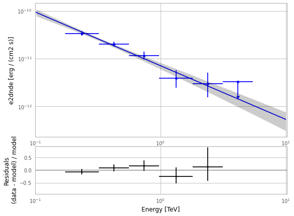
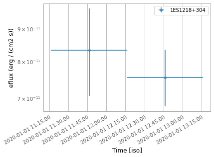

[1]:
%load_ext autoreload
%autoreload 2
Step 1. Generate a configuration file
[2]:
import vtspy
from vtspy import *
WARNING: version mismatch between CFITSIO header (v4.000999999999999) and linked library (v4.01).
WARNING: version mismatch between CFITSIO header (v4.000999999999999) and linked library (v4.01).
WARNING: version mismatch between CFITSIO header (v4.000999999999999) and linked library (v4.01).
[3]:
ls ./veritas
95127.anasum.fits 95128.anasum.root 95130.anasum.log obs-index.fits.gz
95127.anasum.log 95129.anasum.fits 95130.anasum.root simple.pickle
95127.anasum.root 95129.anasum.log analyzed.pickle
95128.anasum.fits 95129.anasum.root hdu-index.fits.gz
95128.anasum.log 95130.anasum.fits initial.pickle
[4]:
config = JointConfig(files="./veritas/")
2022-06-14 22:48:18 INFO : a configuration file (config.yaml) is created.
[5]:
config.print_config()
2022-06-14 22:48:18 INFO :
fermi:
data:
evfile: ./fermi/EV00.lst
scfile: ./fermi/SC00.fits
ltcube: null
binning:
roiwidth: 12
binsz: 0.08
binsperdec: 8
coordsys: CEL
projtype: WCS
selection:
emin: 100
emax: 300000
tmin: 599529605.0
tmax: 599616005.0
zmax: 105
evclass: 128
evtype: 3
glon: 186.3593855387067
glat: 82.73442268671826
ra: 185.3412470056114
dec: 30.17694222440679
target: 1ES1218+304
gtlike:
edisp: true
irfs: P8R3_SOURCE_V3
edisp_disable:
- isodiff
- galdiff
model:
src_roiwidth: 12
galdiff: $FERMI_DIFFUSE_DIR/gll_iem_v07.fits
isodiff: $FERMI_DIFFUSE_DIR/iso_P8R3_SOURCE_V3_v1.txt
catalogs: /Users/dtak/Research/scripts/vts-fermi/vtspy/refdata/gll_psc_v22.fit
fileio:
outdir: ./fermi/
logfile: ./fermi/log/fermipy.log
usescratch: false
veritas:
background:
file: Hipparcos_MAG8_1997
distance: 1.75
magnitude: 7
fileio:
outdir: ./veritas/
cuts:
th2cut: 0.008
eff_cut: 0
bias_cut: 0
selection:
target: 1ES1218+304
ra: 185.3412470056114
dec: 30.17694222440679
tmin: 58849.46887128472
tmax: 58849.552106979165
emin: 0.1
emax: 2.0
format: mjd
max_region_number: 6
radius: 2.0
exc_on_region_radius: 0.7
exc_radius: 0.25
glon: 186.3593855387067
glat: 82.73442268671826
Step 2. Analyze the VERITAS data
[6]:
from vtspy.analysis import VeritasAnalysis
veritas = VeritasAnalysis(overwrite=True)
2022-06-14 22:48:18 INFO : Initialize the VERITAS analysis.
2022-06-14 22:48:18 INFO : Load the data files.
2022-06-14 22:48:18 INFO : Observations selected: 4 out of 4.
2022-06-14 22:48:18 INFO : The number of observations is {len(self._observations)}
2022-06-14 22:48:18 INFO : Define exclusion regions.
2022-06-14 22:48:18 INFO : Define ON- and OFF-regions.
2022-06-14 22:48:20 INFO : The initial setup is saved [state_file = initial].
2022-06-14 22:48:20 INFO : Completed (VERITAS initialization).
Plot ON- and OFF- regions
[7]:
from vtspy.plotting import plot_ROI
plot_ROI(veritas=veritas)

Peek dataset
[8]:
veritas.peek_dataset()

Apply additional cuts
[9]:
veritas.construct_dataset(eff_cut=20, bias_cut=20)
[10]:
veritas.peek_dataset()

Perform fit and do high-level analyses
[11]:
veritas.fit(model="PowerLaw")
veritas.plotting("fit")
print(veritas.fit_results.total_stat)
2022-06-14 22:48:26 INFO : Fit successfully.
36.50521827709935

[12]:
veritas.analysis()
2022-06-14 22:48:27 INFO : Generating flux points and SED...
2022-06-14 22:48:32 INFO : Completed.
Plot the results
[13]:
veritas.plotting("flux")

[14]:
veritas.plotting("sed")

[15]:
veritas.print_flux()
[15]:
Table length=8
| e_ref | e_min | e_max | e2dnde | e2dnde_err | e2dnde_errp | e2dnde_errn | e2dnde_ul | ts | sqrt_ts | npred | npred_excess | stat | is_ul | counts | success | norm_scan | stat_scan |
|---|---|---|---|---|---|---|---|---|---|---|---|---|---|---|---|---|---|
| TeV | TeV | TeV | TeV / (cm2 s) | TeV / (cm2 s) | TeV / (cm2 s) | TeV / (cm2 s) | TeV / (cm2 s) | ||||||||||
| float64 | float64 | float64 | float64 | float64 | float64 | float64 | float64 | float64 | float64 | float64[1] | float32[1] | float64 | bool | float64[1] | bool | float64[11] | float64[11] |
| 0.132 | 0.100 | 0.173 | nan | nan | nan | nan | nan | nan | nan | nan | 0.0 | 0.000 | False | 0.0 | False | 0.200 .. 5.000 | nan .. nan |
| 0.237 | 0.173 | 0.323 | 2.106e-11 | 2.264e-12 | 2.330e-12 | 2.200e-12 | 2.585e-11 | 186.765 | 13.666 | 125.46348626431288 | 105.20744 | 6.518 | False | 125.0 | True | 0.200 .. 5.000 | 100.700 .. 533.988 |
| 0.426 | 0.323 | 0.561 | 1.259e-11 | 1.598e-12 | 1.658e-12 | 1.541e-12 | 1.603e-11 | 152.117 | 12.334 | 77.8691782752036 | 70.1808 | 4.934 | False | 78.0 | True | 0.200 .. 5.000 | 86.205 .. 285.310 |
| 0.740 | 0.561 | 0.975 | 7.242e-12 | 1.345e-12 | 1.422e-12 | 1.270e-12 | 1.024e-11 | 79.495 | 8.916 | 34.462011906862244 | 31.53912 | 5.126 | False | 34.0 | True | 0.200 .. 5.000 | 49.305 .. 117.792 |
| 1.330 | 0.975 | 1.815 | 2.442e-12 | 1.032e-12 | 1.138e-12 | 9.311e-13 | 4.939e-12 | 12.576 | 3.546 | 8.995619132121444 | 7.6615725 | 8.896 | False | 10.0 | True | 0.200 .. 5.000 | 13.907 .. 60.790 |
| 2.393 | 1.815 | 3.155 | 1.856e-12 | 1.072e-12 | 1.294e-12 | 8.962e-13 | 4.917e-12 | 5.353 | 2.314 | 3.1274996863799687 | 2.9846425 | 6.631 | False | 3.0 | True | 0.200 .. 5.000 | 10.298 .. 18.342 |
| 4.159 | 3.155 | 5.482 | 3.676e-19 | 4.660e-16 | 5.139e-13 | nan | 2.056e-12 | -0.000 | 0.000 | 3.576959621539763e-07 | 3.5769597e-07 | 0.000 | True | 0.0 | True | 0.200 .. 5.000 | 0.346 .. 8.653 |
| 7.481 | 5.482 | 10.209 | nan | nan | 8.245e-13 | nan | nan | -0.027 | -0.000 | 0.013274656243933097 | 0.013274657 | 0.027 | True | 0.0 | False | 0.200 .. 5.000 | 0.111 .. 2.782 |
Generate light curve
[16]:
veritas.analysis(jobs="lc", nbins=2)
2022-06-14 22:48:35 INFO : Generating lightcurve...
2022-06-14 22:48:35 INFO : The number of time intervals is 2
2022-06-14 22:48:37 INFO : Generating lightcurve is completed.
[17]:
veritas.plotting("lc")

[18]:
veritas.print_lightcurve()
[18]:
Table length=2
| time_min | time_max | e_ref | e_min | e_max | eflux | eflux_err | eflux_errp | eflux_errn | eflux_ul | ts | sqrt_ts | npred | npred_excess | stat | is_ul | counts | success | norm_scan | stat_scan |
|---|---|---|---|---|---|---|---|---|---|---|---|---|---|---|---|---|---|---|---|
| TeV | TeV | TeV | TeV / (cm2 s) | TeV / (cm2 s) | TeV / (cm2 s) | TeV / (cm2 s) | TeV / (cm2 s) | ||||||||||||
| float64 | float64 | float64[1] | float64[1] | float64[1] | float64[1] | float64[1] | float64[1] | float64[1] | float64[1] | float64[1] | float64[1] | float64[1,4] | float64[1,4] | float64[1] | bool[1] | float64[1,4] | bool[1] | float64[1,11] | float64[1,11] |
| 58849.46967202546 | 58849.51128987268 | 0.44052443650400697 | 0.09976311574844397 | 1.9452257249714022 | 5.193956223993058e-11 | 8.20513557494633e-12 | 8.567743883568198e-12 | 7.854651443471043e-12 | 6.982713476880074e-11 | 95.59545401797403 | 9.777292775506625 | nan .. nan | nan .. nan | 21.912136094336233 | False | nan .. nan | True | 0.2 .. 4.999999999999999 | 71.54640725771978 .. 230.96220344172417 |
| 58849.51128987268 | 58849.5529077199 | 0.44052443650400697 | 0.09976311574844397 | 1.9452257249714022 | 4.708575769094212e-11 | 4.820705284537399e-12 | 4.965797324992137e-12 | 4.678055239225776e-12 | 5.731244738261498e-11 | 214.26363241178603 | 14.637746835212926 | 58.41001500985955 .. nan | 51.93177795410156 .. nan | 76.56493953532208 | False | 60.0 .. nan | True | 0.2 .. 4.999999999999999 | 183.40898985945307 .. 641.7227502342977 |